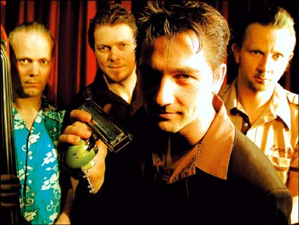

Российские любители блюза еще пока не очень знакомы с немецким блюз-бэндом B.B. & The Blues Shacks. Так не пора ли познакомится? За четырнадцать лет своего существования ансамбль уже добился европейского признания, выступив на всех престижнейших блюз-фестивалях, включая крупнейший в Нуттодене (Норвегия) и престижный английский Great British R'n'B Festival; и именно их выступление открывало недавний Всемирный фестиваль губной гармоники в Троссингеме (Германия). Они с успехом выступали и на родине блюза, например в знаменитом клубе Buddy Guy's Legends в Чикаго вместе с Джеймсом Коттоном, легендарным чикагским мастером губной гармоники. По результатам опроса своих читателей журнал Blues News неоднократно называл их лучшим блюз-бэндом года и присудил их альбому звание лучшего блюзового альбома Германии.B.B. & The Blues Shacks исполняют как собственный песни, так и блюзовые хиты и малоизвестную блюзовую классику. В музыке ансамбль идет от ритм-энд-блюза 50-х годов, добавляя энергичный свинг или расслабленный шафл. При этом музыкантам удается избежать заезженных клише. Их музыка звучит свежо и зажигательно. Большой опыт им принесли совместные выступления со многими классиками или сегодняшними звездами американского блюза, например со Смоуки Уилсоном, Тэдом Робинсоном, Дейвом Спектром, Алексом Шульцом и Кидом Рамосом. За время своего существования группа выпустила уже 7 альбомов. Сегодня они являются одной из самых горячих концертных блюзовых групп в Европе, играя до 150 концертов в год.
Официальный сайт B.B. & The Blues Shacks